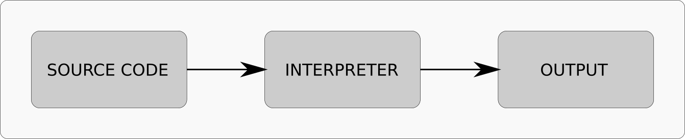
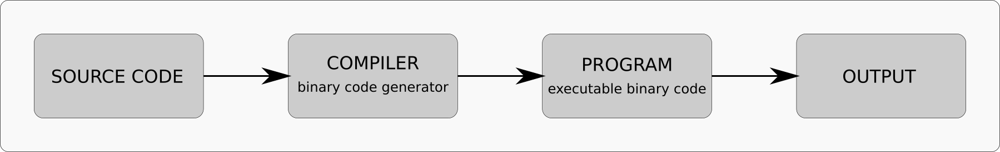
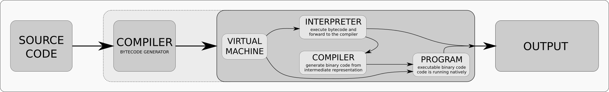
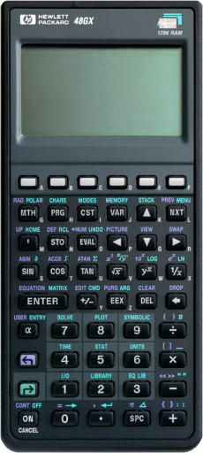
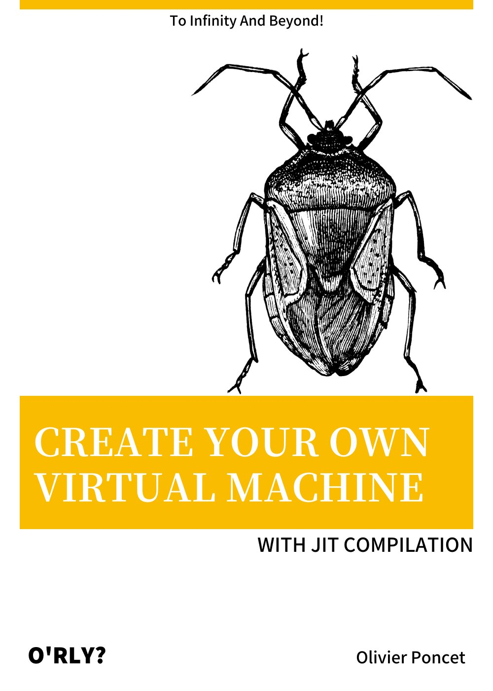

CE TALK EST ASSEZ TECHNIQUE !
VOUS ALLEZ VOIR DU CODE C++ ET DE L'ASSEMBLEUR üò±
Mais ne vous inqui√©tez pas, tout va bien se passer ü§ì
KESAKO ?
Acronyme de « Just In Time » compiler, elle permet de :
▪ ▪ ▪
▪ ▪ ▪
JUSTE UNE MISE AU POINT
LE HAUT NIVEAU
▪ ▪ ▪
LE BAS NIVEAU
▪ ▪ ▪
LE NIVEAU INTERMÉDIAIRE
▪ ▪ ▪
DIFFÉRENTES FAÇONS DE COMPRENDRE UN LANGAGE
QUATRE GRANDES TECHNIQUES
▪ ▪ ▪

üëç
üëé

üëç
üëé
üëç
üëé

üëç
üëé
AVEC SON BYTECODE ET SA JIT INTÉGRÉE
LA RECETTE DE TONTON Z'OLIV'
▪ ▪ ▪
REVERSE POLISH NOTATION

La notation polonaise inverse (ou notation post-fixée) permet d'écrire des formules arithmétiques de façon simple et non ambiguë
POUR ILLUSTRER LE PRINCIPE
1 + 2 → 1 2 +
3 * 4 → 3 4 *
1 + 2 * 3 → 1 2 3 * +
(3 + 4) * 2 + 1 → 3 4 + 2 * 1 +
3 - (4 * 5) → 3 4 5 * −
▪ ▪ ▪
nop |
no operation; do absolutely nothing | ||
nnn |
push the nnn value onto the stack |
||
i1 |
top |
get the topmost value from the stack | |
i1 |
pop |
pop the topmost value from the stack | |
clr |
clear the stack | ||
i1 |
dup |
duplicate i1 |
|
i1 |
i2 |
xch |
exchange i1 and i2 |
i1 |
i2 |
sto |
store i1 into i2 register |
i1 |
rcl |
fetch i2 from i1 register |
|
i1 |
abs |
compute the absolute value of i1 |
|
i1 |
neg |
compute the negation of i1 |
|
i1 |
i2 |
add |
compute the sum of i1 and i2 |
i1 |
i2 |
sub |
compute the difference of i1 and i2 |
i1 |
i2 |
mul |
compute the product of i1 and i2 |
i1 |
i2 |
div |
compute the division of i1 and i2 |
i1 |
i2 |
mod |
compute the remainder of i1 and i2 |
i1 |
cpl |
compute the one’s complement of i1 |
|
i1 |
i2 |
and |
compute the logical and between i1 and i2 |
i1 |
i2 |
ior |
compute the logical inclusive or between i1 and i2 |
i1 |
i2 |
xor |
compute the logical exclusive or between i1 and i2 |
i1 |
i2 |
shl |
shift i1 i2 bits to the left |
i1 |
i2 |
shr |
shift i1 i2 bits to the right |
i1 |
inc |
increment i1 |
|
i1 |
dec |
decrement i1 |
|
i1 |
hlt |
blocks the execution for at least i1 milliseconds |
i1 |
i2 |
+ |
same as <i1> <i2> add |
i1 |
i2 |
- |
same as <i1> <i2> sub |
i1 |
i2 |
* |
same as <i1> <i2> mul |
i1 |
i2 |
/ |
same as <i1> <i2> div |
i1 |
i2 |
% |
same as <i1> <i2> mod |
i1 |
i2 |
~ |
same as <i1> <i2> cpl |
i1 |
i2 |
& |
same as <i1> <i2> and |
i1 |
i2 |
| |
same as <i1> <i2> ior |
i1 |
i2 |
^ |
same as <i1> <i2> xor |
i1 |
i2 |
<< |
same as <i1> <i2> shl |
i1 |
i2 |
>> |
same as <i1> <i2> shr |
i1 |
++ |
same as <i1> inc |
|
i1 |
-- |
same as <i1> dec |
i1 |
st0 |
same as <i1> 0 sto |
|
i1 |
st1 |
same as <i1> 1 sto |
|
i1 |
st2 |
same as <i1> 2 sto |
|
i1 |
st3 |
same as <i1> 3 sto |
|
i1 |
st4 |
same as <i1> 4 sto |
|
i1 |
st5 |
same as <i1> 5 sto |
|
i1 |
st6 |
same as <i1> 6 sto |
|
i1 |
st7 |
same as <i1> 7 sto |
|
i1 |
st8 |
same as <i1> 8 sto |
|
i1 |
st9 |
same as <i1> 9 sto |
|
rc0 |
same as 0 rcl |
||
rc1 |
same as 1 rcl |
||
rc2 |
same as 2 rcl |
||
rc3 |
same as 3 rcl |
||
rc4 |
same as 4 rcl |
||
rc5 |
same as 5 rcl |
||
rc6 |
same as 6 rcl |
||
rc7 |
same as 7 rcl |
||
rc8 |
same as 8 rcl |
||
rc9 |
same as 9 rcl |
||
rnd |
same as 29 rcl; get a pseudo-random number |
||
now |
same as 30 rcl; get the number of milliseconds since epoch |
||
i1 |
i2 |
fib |
same as dup 20 sto add 20 rcl xch; compute an iteration of the fibonacci suite |
run |
run the compiled expression |
VUE SIMPLIFIÉE
C'EST NOTRE MACHINE VIRTUELLE
class Calculator
{
public: // public interface
Calculator(Console&);
virtual ~Calculator() = default;
void execute(const std::string& expression);
void compile(const std::string& expression);
void run();
void clear();
int64_t result();
private: // private data
Console& _console;
Operands _operands;
ByteCode _bytecode;
HostCode _hostcode;
};
CONTIENT LA STACK, LES REGISTRES ET LES OPÉRATEURS
struct Operands
{
std::stack<int64_t> stack;
std::array<int64_t, 32> array;
};
struct Operators
{
static int64_t op_nop(Operands& operands);
static int64_t op_i64(Operands& operands, const int64_t operand);
static int64_t op_top(Operands& operands);
static int64_t op_pop(Operands& operands);
static int64_t op_clr(Operands& operands);
static int64_t op_dup(Operands& operands);
static int64_t op_xch(Operands& operands);
static int64_t op_sto(Operands& operands);
static int64_t op_rcl(Operands& operands);
static int64_t op_abs(Operands& operands);
static int64_t op_neg(Operands& operands);
static int64_t op_add(Operands& operands);
static int64_t op_sub(Operands& operands);
static int64_t op_mul(Operands& operands);
static int64_t op_div(Operands& operands);
static int64_t op_mod(Operands& operands);
static int64_t op_cpl(Operands& operands);
static int64_t op_and(Operands& operands);
static int64_t op_ior(Operands& operands);
static int64_t op_xor(Operands& operands);
static int64_t op_shl(Operands& operands);
static int64_t op_shr(Operands& operands);
static int64_t op_inc(Operands& operands);
static int64_t op_dec(Operands& operands);
static int64_t op_hlt(Operands& operands);
};
C'EST LE PSEUDO CODE MACHINE DE NOTRE VM
▪ ▪ ▪
REPRÉSENTATION EN MÉMOIRE
LE PSEUDO CODE MACHINE DE NOTRE VM
class ByteCode
{
public: // public interface
ByteCode();
virtual ~ByteCode();
void reset();
void emit_byte(const uint8_t value);
void emit_word(const uint16_t value);
void emit_long(const uint32_t value);
void emit_quad(const uint64_t value);
void emit_nop();
void emit_i64(const int64_t operand);
void emit_top();
void emit_pop();
void emit_clr();
...
void emit_add();
void emit_sub();
void emit_mul();
void emit_div();
...
private: // private data
uint8_t* _buffer;
uint8_t* _bufptr;
size_t _length;
};
class ByteCode
{
public: // public interface
...
public: // opcodes
static constexpr uint8_t OP_NOP = 0x00;
static constexpr uint8_t OP_I64 = 0x01;
static constexpr uint8_t OP_TOP = 0x02;
static constexpr uint8_t OP_POP = 0x03;
static constexpr uint8_t OP_CLR = 0x04;
static constexpr uint8_t OP_DUP = 0x05;
static constexpr uint8_t OP_XCH = 0x06;
static constexpr uint8_t OP_STO = 0x07;
static constexpr uint8_t OP_RCL = 0x08;
static constexpr uint8_t OP_ABS = 0x09;
static constexpr uint8_t OP_NEG = 0x0a;
static constexpr uint8_t OP_ADD = 0x0b;
static constexpr uint8_t OP_SUB = 0x0c;
static constexpr uint8_t OP_MUL = 0x0d;
static constexpr uint8_t OP_DIV = 0x0e;
static constexpr uint8_t OP_MOD = 0x0f;
static constexpr uint8_t OP_CPL = 0x10;
static constexpr uint8_t OP_AND = 0x11;
static constexpr uint8_t OP_IOR = 0x12;
static constexpr uint8_t OP_XOR = 0x13;
static constexpr uint8_t OP_SHL = 0x14;
static constexpr uint8_t OP_SHR = 0x15;
static constexpr uint8_t OP_INC = 0x16;
static constexpr uint8_t OP_DEC = 0x17;
static constexpr uint8_t OP_HLT = 0x18;
...
};
TRANSFORMER UNE EXPRESSION EN BYTECODE
FETCH · DECODE · EXECUTE
LIRE ET DÉCODER LE BYTECODE
void Calculator::run()
{
int skip = 0;
for(const uint8_t& opcode : _bytecode) {
if(skip > 0) {
--skip;
}
else switch(opcode) {
case ByteCode::OP_NOP:
skip = execute_nop(opcode);
break;
case ByteCode::OP_I64:
skip = execute_i64(opcode);
break;
...
case ByteCode::OP_ADD:
skip = execute_add(opcode);
break;
case ByteCode::OP_SUB:
skip = execute_sub(opcode);
break;
case ByteCode::OP_MUL:
skip = execute_mul(opcode);
break;
case ByteCode::OP_DIV:
skip = execute_div(opcode);
break;
...
default:
throw std::runtime_error("unexpected opcode");
}
}
}
EXÉCUTER LES MICRO-INSTRUCTIONS
int Calculator::execute_i64(const uint8_t& opcode)
{
int64_t operand = 0;
operand = ((operand << 8) | (&opcode)[8]);
operand = ((operand << 8) | (&opcode)[7]);
operand = ((operand << 8) | (&opcode)[6]);
operand = ((operand << 8) | (&opcode)[5]);
operand = ((operand << 8) | (&opcode)[4]);
operand = ((operand << 8) | (&opcode)[3]);
operand = ((operand << 8) | (&opcode)[2]);
operand = ((operand << 8) | (&opcode)[1]);
Operators::op_i64(_operands, operand)
return 8;
}
...
int Calculator::execute_add(const uint8_t& opcode)
{
Operators::op_add(_operands)
return 0;
}
...
LA BASE DE LA COMPILATION JIT
UNE RECETTE ÉPROUVÉE
▪ ▪ ▪
INSTRUCTION SET ARCHITECTURE
C'est le modèle d'architecture et la description complète
d'un microprocesseur ou d'une famille de microprocesseurs
▪ ▪ ▪
DES SPÉCIFICATIONS COMPLÈTES
▪ ▪ ▪
APPLICATION BINARY INTERFACE
Elle décrit les conventions utilisées par le système d'exploitation
et les programmes dans le contexte d'exécution du code binaire
Elle est spécifique à un ou plusieurs systèmes d'exploitation
et peut être différente pour une même architecture processeur
▪ ▪ ▪
DES CONVENTIONS D'INTERFACES
▪ ▪ ▪
EXTRAITS DE LA SPÉCIFICATION
This is a 64-bit platform. The stack grows downwards. Parameters to functions are passed in the registers rdi, rsi, rdx, rcx, r8, r9, and further values are passed on the stack in reverse order. Parameters passed on the stack may be modified by the called function. Functions are called using the call instruction that pushes the address of the next instruction to the stack and jumps to the operand. Functions return to the caller using the ret instruction that pops a value from the stack and jump to it. The stack is 16-byte aligned just before the call instruction is called.
Functions preserve the registers rbx, rsp, rbp, r12, r13, r14, and r15; while rax, rdi, rsi, rdx, rcx, r8, r9, r10, r11 are scratch registers. The return value is stored in the rax register, or if it is a 128-bit value, then the higher 64-bits go in rdx. Optionally, functions push rbp such that the caller-return-rip is 8 bytes above it, and set rbp to the address of the saved rbp. This allows iterating through the existing stack frames. This can be eliminated by specifying the -fomit-frame-pointer GCC option.
Signal handlers are executed on the same stack, but 128 bytes known as the red zone is subtracted from the stack before anything is pushed to the stack. This allows small leaf functions to use 128 bytes of stack space without reserving stack space by subtracting from the stack pointer. The red zone is well-known to cause problems for x86-64 kernel developers, as the CPU itself doesn't respect the red zone when calling interrupt handlers. This leads to a subtle kernel breakage as the ABI contradicts the CPU behavior. The solution is to build all kernel code with -mno-red-zone or by handling interrupts in kernel mode on another stack than the current (and thus implementing the ABI).
▪ ▪ ▪
UNE FONCTION EN APPELANT UNE AUTRE
void hello_world()
{
std::cout << "Hello World!" << std::endl;
}
void function()
{
hello_world();
}
AVEC UN CODE SIMPLE ET NON OPTIMAL
; -------------------------------------------------------------------
; function prolog
; -------------------------------------------------------------------
push rbp ; save the base pointer onto the stack
mov rbp,rsp ; load the base pointer with the stack pointer
; -------------------------------------------------------------------
; function body
; -------------------------------------------------------------------
mov rax,hello_world ; load rax with the hello_world address
call rax ; call the address pointed by rax
; -------------------------------------------------------------------
; function epilog
; -------------------------------------------------------------------
mov rsp,rbp ; restore the stack pointer from the base pointer
pop rbp ; restore the saved base pointer from the stack
ret ; return to the caller
APRÈS ASSEMBLAGE
00: 55 push rbp
01: 48 89 e5 mov rbp,rsp
04: 48 b8 00 11 22 33 44 55 66 77 mov rax,0x7766554433221100
0e: ff d0 call rax
10: 48 89 ec mov rsp,rbp
13: 5d pop rbp
14: c3 ret
class HostCode
{
public: // public interface
HostCode();
virtual ~HostCode();
void emit_byte(const uint8_t value);
void emit_word(const uint16_t value);
void emit_long(const uint32_t value);
void emit_quad(const uint64_t value);
void nop();
void push_rbp();
void mov_rbp_rsp();
void sub_rsp_imm08(const uint8_t imm08);
void mov_rsp_rbp();
void pop_rbp();
void ret();
void mov_rax_imm64(const uint64_t imm64);
void mov_rdi_imm64(const uint64_t imm64);
void mov_rsi_imm64(const uint64_t imm64);
void call_rax();
void execute();
private: // private interface
void allocate();
void deallocate();
private: // private data
uint8_t* _buffer;
uint8_t* _bufptr;
size_t _length;
};
HostCode::HostCode()
: _buffer(nullptr)
, _bufptr(nullptr)
, _length(0)
{
allocate();
}
void HostCode::allocate()
{
if(_length == 0) {
const long length = ::sysconf(_SC_PAGESIZE);
if(length > 0) {
_length = length;
}
else {
throw std::runtime_error("sysconf() has failed");
}
}
if(_buffer == nullptr) {
const int prot = (PROT_READ | PROT_WRITE | PROT_EXEC);
const int flags = (MAP_PRIVATE | MAP_ANONYMOUS);
void* buffer = ::mmap(nullptr, _length, prot, flags, -1, 0);
if(buffer != MAP_FAILED) {
_buffer = _bufptr = reinterpret_cast<uint8_t*>(buffer);
}
else {
throw std::runtime_error("mmap() has failed");
}
}
}
HostCode::~HostCode()
{
deallocate();
}
void HostCode::deallocate()
{
if(_buffer != nullptr) {
const int rc = ::munmap(_buffer, _length);
if(rc == 0) {
_buffer = _bufptr = nullptr;
}
else {
throw std::runtime_error("munmap() has failed");
}
}
if(_length != 0) {
_length = 0;
}
}
void HostCode::emit_byte(const uint8_t value)
{
if(_bufptr < (_buffer + _length)) {
*_bufptr++ = value;
}
else {
throw std::runtime_error("buffer is full");
}
}
void HostCode::emit_word(const uint16_t value)
{
emit_byte(static_cast<uint8_t>((value >> 0) & 0xff));
emit_byte(static_cast<uint8_t>((value >> 8) & 0xff));
}
void HostCode::emit_long(const uint32_t value)
{
emit_byte(static_cast<uint8_t>((value >> 0) & 0xff));
emit_byte(static_cast<uint8_t>((value >> 8) & 0xff));
emit_byte(static_cast<uint8_t>((value >> 16) & 0xff));
emit_byte(static_cast<uint8_t>((value >> 24) & 0xff));
}
void HostCode::emit_quad(const uint64_t value)
{
emit_byte(static_cast<uint8_t>((value >> 0) & 0xff));
emit_byte(static_cast<uint8_t>((value >> 8) & 0xff));
emit_byte(static_cast<uint8_t>((value >> 16) & 0xff));
emit_byte(static_cast<uint8_t>((value >> 24) & 0xff));
emit_byte(static_cast<uint8_t>((value >> 32) & 0xff));
emit_byte(static_cast<uint8_t>((value >> 40) & 0xff));
emit_byte(static_cast<uint8_t>((value >> 48) & 0xff));
emit_byte(static_cast<uint8_t>((value >> 56) & 0xff));
}
void HostCode::push_rbp()
{
emit_byte(0x55);
}
void HostCode::mov_rbp_rsp()
{
emit_byte(0x48);
emit_byte(0x89);
emit_byte(0xe5);
}
void HostCode::mov_rsp_rbp()
{
emit_byte(0x48);
emit_byte(0x89);
emit_byte(0xec);
}
void HostCode::pop_rbp()
{
emit_byte(0x5d);
}
void HostCode::ret()
{
emit_byte(0xc3);
}
void HostCode::mov_rax_imm64(const uint64_t imm64)
{
emit_byte(0x48);
emit_byte(0xb8);
emit_quad(imm64);
}
using PointerToFunction = void(*)(void);
void HostCode::execute()
{
PointerToFunction function = reinterpret_cast<PointerToFunction>(_buffer);
if((_buffer != nullptr) && (_bufptr != nullptr) && (_buffer < _bufptr)) {
(*function)();
}
else {
throw std::runtime_error("cannot execute null buffer");
}
}
void hello_world()
{
std::cout << "Hello World!" << std::endl;
}
int main(int argc, char* argv[])
{
try {
jit::HostCode hostcode;
hostcode.push_rbp();
hostcode.mov_rbp_rsp();
hostcode.mov_rax_imm64(reinterpret_cast<uintptr_t>(&hello_world));
hostcode.call_rax();
hostcode.mov_rsp_rbp();
hostcode.pop_rbp();
hostcode.ret();
hostcode.execute();
}
catch(const std::runtime_error& e) {
std::cerr << e.what() << std::endl;
}
return EXIT_SUCCESS;
}
user@host:~$ make
g++ -c -std=c++14 -g -Og -Wall -I. example1.cc
g++ -L. -o example1.bin example1.o -lpthread -lm
=== build ok ===
user@host:~$ ./example1.bin
Hello World!
IT WORKS! üéâ
user@host:~$ gdb ./example1.bin
Reading symbols from example1.bin...
(gdb) break HostCode::execute()
Breakpoint 1 at 0x19c0: file example1.cc, line 203.
(gdb) run
Starting program: example1.bin
Breakpoint 1, jit::HostCode::execute (this=this@entry=0x7fffffffdc50) at example1.cc:203
203 {
(gdb) set disassembly-flavor intel
(gdb) disassemble _buffer,_bufptr
Dump of assembler code from 0x7ffff7ffa000 to 0x7ffff7ffa015:
0x00007ffff7ffa000: push rbp
0x00007ffff7ffa001: mov rbp,rsp
0x00007ffff7ffa004: movabs rax,0x555555555400
0x00007ffff7ffa00e: call rax
0x00007ffff7ffa010: mov rsp,rbp
0x00007ffff7ffa013: pop rbp
0x00007ffff7ffa014: ret
End of assembler dump.
(gdb) continue
Continuing.
Hello World!
[Inferior 1 (process 26251) exited normally]
(gdb) quit
EASY PEASY üòé
Un basic block est une séquence de code sans embranchements
ayant un seul point d'entrée et un seul point de sortie
Ils forment les sommets et les nœuds d'un graphe d'exécution
▪ ▪ ▪
void function()
{
hello_world();
}
void function(long count)
{
while(count > 0) {
hello_world();
--count;
}
}
class BasicBlock
{
public: // public interface
BasicBlock(HostCode& hostcode);
virtual ~BasicBlock() = default;
void reset();
void begin();
void end();
void execute();
HostCode* operator->()
{
return &_hostcode;
}
private: // private data
HostCode& _hostcode;
const uint8_t* _begin;
const uint8_t* _end;
};
int main(int argc, char* argv[])
{
try {
jit::HostCode hostcode;
jit::BasicBlock bb1(hostcode);
jit::BasicBlock bb2(hostcode);
/* initialize basic block 1 */ {
bb1.begin();
bb1->push_rbp();
bb1->mov_rbp_rsp();
bb1->mov_rax_imm64(reinterpret_cast<uintptr_t>(&hello_world1));
bb1->call_rax();
bb1->mov_rsp_rbp();
bb1->pop_rbp();
bb1->ret();
bb1.end();
}
/* initialize basic block 2 */ {
bb2.begin();
bb2->push_rbp();
bb2->mov_rbp_rsp();
bb2->mov_rax_imm64(reinterpret_cast<uintptr_t>(&hello_world2));
bb2->call_rax();
bb2->mov_rsp_rbp();
bb2->pop_rbp();
bb2->ret();
bb2.end();
}
/* execute all basic blocks */ {
bb1.execute();
bb2.execute();
}
}
catch(const std::runtime_error& e) {
std::cerr << e.what() << std::endl;
}
return EXIT_SUCCESS;
}
user@host:~$ make
g++ -c -std=c++14 -g -Og -Wall -I. example2.cc
g++ -L. -o example2.bin example2.o -lpthread -lm
=== build ok ===
user@host:~$ ./example2.bin
Hello World #1
Hello World #2
IT WORKS AGAIN! ü•≥
user@host:~$ gdb ./example2.bin
Reading symbols from example2.bin...
(gdb) break HostCode::~HostCode()
Breakpoint 1 at 0x26ba: HostCode::~HostCode(). (2 locations)
(gdb) run
Starting program: example2.bin
Hello World #1
Hello World #2
Breakpoint 1, jit::HostCode::~HostCode (this=0x7fffffffdc10, __in_chrg=<optimized out>) at example2.cc:52
52 HostCode::~HostCode()
(gdb) set disassembly-flavor intel
(gdb) disassemble _buffer,_bufptr
Dump of assembler code from 0x7ffff7ffa000 to 0x7ffff7ffa02a:
0x00007ffff7ffa000: push rbp
0x00007ffff7ffa001: mov rbp,rsp
0x00007ffff7ffa004: movabs rax,0x555555556400
0x00007ffff7ffa00e: call rax
0x00007ffff7ffa010: mov rsp,rbp
0x00007ffff7ffa013: pop rbp
0x00007ffff7ffa014: ret
0x00007ffff7ffa015: push rbp
0x00007ffff7ffa016: mov rbp,rsp
0x00007ffff7ffa019: movabs rax,0x55555555647a
0x00007ffff7ffa023: call rax
0x00007ffff7ffa025: mov rsp,rbp
0x00007ffff7ffa028: pop rbp
0x00007ffff7ffa029: ret
End of assembler dump.
(gdb) continue
Continuing.
[Inferior 1 (process 16969) exited normally]
(gdb) quit
LIKE A BOSS üòé
NOUS SAVONS GÉNÉRER ET EXÉCUTER DU CODE BINAIRE
AJOUTONS UNE JIT
EXÉCUTER LE BYTECODE OU LE CODE NATIF
void Calculator::run()
{
if(_function.callable()) {
log_trace("the bytecode has already been translated, executing the generated machine code...");
_function.execute();
}
else {
log_trace("the bytecode has never been translated, executing bytecode and translating to machine code...");
translate();
}
};
LIRE ET DÉCODER LE BYTECODE
void Calculator::translate()
{
prolog();
int skip = 0;
for(const uint8_t& opcode : _bytecode) {
if(skip > 0) {
--skip;
}
else switch(opcode) {
case ByteCode::OP_NOP:
skip = execute_and_compile_nop(opcode);
break;
case ByteCode::OP_I64:
skip = execute_and_compile_i64(opcode);
break;
...
case ByteCode::OP_ADD:
skip = execute_and_compile_add(opcode);
break;
...
default:
throw std::runtime_error("unexpected opcode");
}
}
epilog();
}
PROLOG & EPILOG
void Calculator::prolog()
{
BasicBlock bb;
bb.begin(_hostcode.end());
_hostcode.push_rbp();
_hostcode.mov_rbp_rsp();
bb.end(_hostcode.end());
_function.add(bb);
};
void Calculator::epilog()
{
BasicBlock bb;
bb.begin(_hostcode.end());
_hostcode.mov_rsp_rbp();
_hostcode.pop_rbp();
_hostcode.ret();
bb.end(_hostcode.end());
_function.add(bb);
};
EXÉCUTER ET COMPILER LES MICRO-INSTRUCTIONS
int Calculator::execute_and_compile_i64(const uint8_t& opcode)
{
int64_t operand = 0;
operand = ((operand << 8) | (&opcode)[8]);
operand = ((operand << 8) | (&opcode)[7]);
operand = ((operand << 8) | (&opcode)[6]);
operand = ((operand << 8) | (&opcode)[5]);
operand = ((operand << 8) | (&opcode)[4]);
operand = ((operand << 8) | (&opcode)[3]);
operand = ((operand << 8) | (&opcode)[2]);
operand = ((operand << 8) | (&opcode)[1]);
exec_i64(operand);
emit_i64(operand);
return 8;
}
void Calculator::exec_i64(const int64_t operand)
{
Operators::op_i64(_operands, operand)
}
void Calculator::emit_i64(const int64_t operand)
{
BasicBlock bb;
bb.begin(_hostcode.end());
_hostcode.mov_rsi_imm64(operand);
_hostcode.mov_rdi_imm64(reinterpret_cast<uintptr_t>(&operands));
_hostcode.mov_rax_imm64(reinterpret_cast<uintptr_t>(&Operators::op_i64));
_hostcode.call_rax();
bb.end(_hostcode.end());
_function.add(bb);
}
SANS EFFET BONALDI
TO INFINITY AND BEYOND!

| Retrouvez le code sur mes miroirs |
| github.com/ponceto/rpn-calculator-with-jit |
| gitlab.com/ponceto/rpn-calculator-with-jit |
| bitbucket.org/ponceto/rpn-calculator-with-jit |
| @ponceto91 | emaxilde.net |
| @ponceto91 | github.com/ponceto/ |
| @ponceto91 | gitlab.com/ponceto/ |
| @ponceto91 | bitbucket.org/ponceto/ |